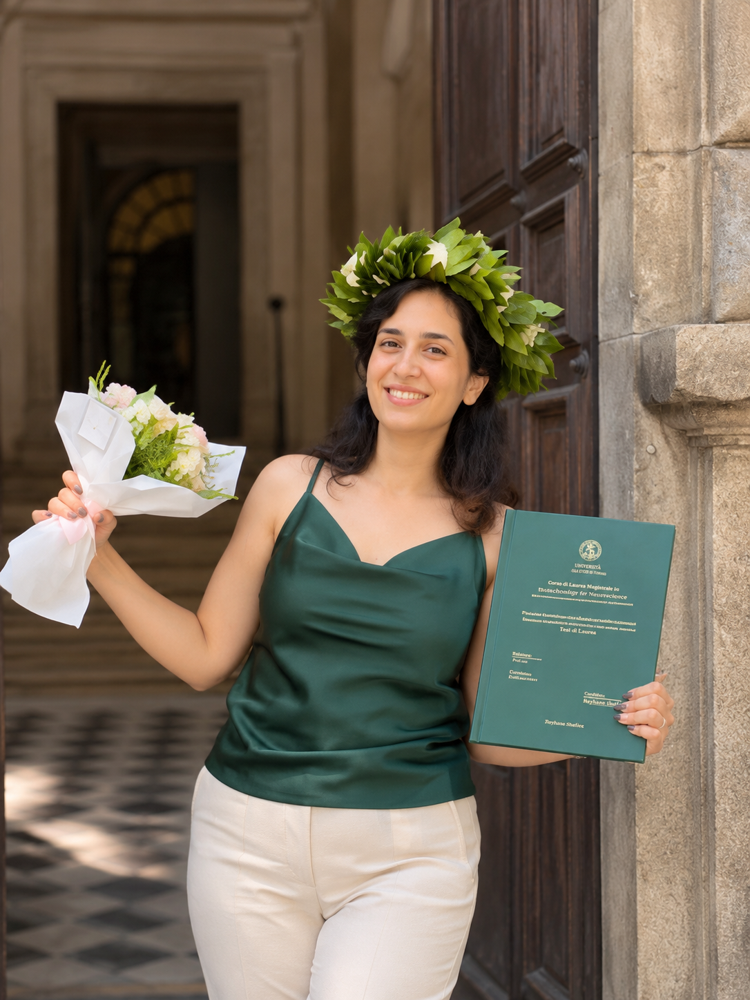

Multisensory Integration
For my master's thesis, I investigated how self-directed hand movements influence the integration of auditory and tactile information.
Methods: Human EEG, event-related potentials, behavioural analysis, and MATLAB.
Hi, I'm Reyhane! I have an MSc in Biotechnology for Neuroscience. I'm interested in understanding the brain, exploring scientific questions, and discovering the world beyond the laboratory.
Welcome to my little corner of the internet.

I completed my MSc in Biotechnology for Neuroscience at the University of Turin, Italy.
My academic journey has taken me from experimental neuroscience and animal models of neurodegeneration to human electrophysiology and multisensory integration.
Beyond science, I enjoy photography, travelling, cooking, watching films, reading, learning languages, and exploring philosophical questions.
Exploring the brain through experimental and electrophysiological approaches.
For my master's thesis, I investigated how self-directed hand movements influence the integration of auditory and tactile information.
Methods: Human EEG, event-related potentials, behavioural analysis, and MATLAB.
During my internship at the Neuroscience Institute Cavalieri Ottolenghi, I investigated the effects of sleep fragmentation in mouse models of Alzheimer's disease.
Methods: Animal behavioural testing, PCR, gel electrophoresis, and brain tissue sectioning.
Developing computational skills to explore neuroscience data through programming, visualization, and statistical analysis.
Practising data manipulation, visualization, and statistical analysis using Python.
Exploring computational approaches to neuroimaging and brain-related datasets.
Science is only one part of my curiosity. Here are some of the things that make life interesting.
Photography and travel. Capturing places, details, and moments worth remembering.
Cooking, experimenting with recipes, and discovering different food cultures.
Books and films that make me feel, think, and see things differently.
Philosophy, learning languages, and exploring different perspectives on the world.
Interested in neuroscience, collaboration, or simply exchanging ideas?
Find me on GitHub .